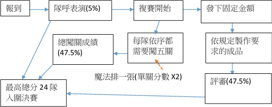

2016 智慧鐵人創意競賽
Intelligent Ironman Creativity Contest
組隊辦法
參賽資格
全國在學高級中等學校學生組隊參加，一隊最少4人最多6人。
報名時間
第一梯次：2015年12月15日12:00至2016年2月17日17:00止。
(截止時間前報名成功,即可馬上選場地 )
補件截止時間為2月19日17:00止，補件後選場：2月20日8:00至2月21日17:00
第二梯次：2016年3月21日12:00至5月3日止17:00止。
(截止時間前報名成功,即可馬上選場地 )
補件截止時間為5月5日17:00止，補件後選場：5月6日8:00至7日17:00
參賽組別
分為一般組與技職組。
分組組別以隊員過半數為依歸，如人數各半，該隊可自由選擇。
一般組：普通高中與綜合高中的普通組學生。
技職組：技術型高級中等學校、綜合型高中的技職組，還有單科型高中(舊制高職與五專一至三年級))
分區
參賽隊伍請依學校所在地為參賽地區，不得越區報名。如人數相同，則可跨區。
北區: 基隆、台北、桃園、新竹。
中區: 苗栗、台中、彰化、南投、雲林。
南區: 嘉義、台南、高雄、屏東。
東部與離島地區: 宜蘭、花蓮、台東、馬祖、澎湖、金門。
初賽時間與地點
初賽時間與地點：
初賽分為兩梯次辦理，每梯三場。
第一梯次競賽日期為2016年3月6日、3月13日、3月20日；第二梯次競賽日期為同年5月22日、5月29日、6月5日。
每場次競賽時間一日(9:00-18:00)。同日題目相同(不同日不同)，全國同步競賽，參賽隊伍每梯只需擇一場次參加。
備註：
第一梯次未晉級複賽，可報名第二梯次
若9點前有任一隊員沒有報到成功,則全隊視為報到不成功
正確關卡時間每一場都可能不同,以報到時發的時程表為準
賽場資訊(點選場地看交通資訊)
| 第一梯次 | |||
|---|---|---|---|
| 報名 | 2015 年12月15日至2016年2月17日 | ||
| 競賽時間/場地 | 3月6日 | 3月13日 | 3月20日 |
| 北區 | (尚未公布) | (尚未公布) | (尚未公布) |
| 中區 | (尚未公布) | (尚未公布) | (尚未公布) |
| 南區 | (尚未公布) | (尚未公布) | (尚未公布) |
| 東部與離島地區 | (尚未公布) | (尚未公布) | (尚未公布) |
|
※ 離島地區(馬祖、澎湖、金門)參賽隊伍的分數併入東部與離島地區計算； ※ 為了增加隊伍參賽便利性，每個賽場將開放一半的名額，讓全國參賽隊伍選擇。但是，選擇外區場地的隊伍，成績仍回到原區計算，例如中區隊伍選擇北區的場地參賽，隊伍的成績仍將回歸中區實際報到隊伍中，分配晉級名額與名次。 |
|||
備註：場地名稱(場地隊伍容量)
| 第二梯次 | |||
|---|---|---|---|
| 報名 | 2016年3月21日至2016年5月3日 | ||
| 競賽時間/場地 | 5月22日 | 5月29日 | 6月5日 |
| 北區 | (尚未公布) | (尚未公布) | (尚未公布) |
| 中區 | (尚未公布) | (尚未公布) | (尚未公布) |
| 南區 | (尚未公布) | (尚未公布) | (尚未公布) |
| 東部與離島地區 | (尚未公布) | (尚未公布) | (尚未公布) |
|
※ 離島地區(馬祖、澎湖、金門)參賽隊伍的分數併入東部與離島地區計算； ※ 為了增加隊伍參賽便利性，每個賽場將開放一半的名額，讓全國參賽隊伍選擇。但是，選擇外區場地的隊伍，成績仍回到原區計算，例如中區隊伍選擇北區的場地參賽，隊伍的成績仍將回歸中區實際報到隊伍中，分配晉級名額與名次。 |
|||
備註：場地名稱(場地隊伍容量)
初賽辦法
智慧鐵人創意競賽初賽主要測試隊伍的實作與基本學識。
每場競賽有3-4關，題型分為實作、文本、體育其他類，內容包含人文藝術、自然科學、體能技巧與團隊合作等。
(隊伍可下載歷屆初賽試題，按題目所規定的材料、時間、規則練習，並自行演練評分流程，將有效幫助隊伍掌材料特性、時間與競賽規則，較容易脫穎而出。)
初賽重要提示
為了能給予參賽者一個完全創意的環境，競賽最高原則是題目沒有說不可以的，只要不是破壞行為，就都可以。
請小隊仔細閱讀題目規則。由於創意比賽本質沒有標準答案，隊員問裁判問題時，裁判不一定會給答案。
有時間折減題目，花越多時間做答，分數也會越低。請在答題效率與正確率間做取捨。
題目計分方式：
競賽每場次有3-4題，計分方式如下：
每題得分：初賽每題以100分計。為防止題目難易不均，賽後會將全國最高得分調整為100分，其他隊伍按相同比例調整，使不同專長的題目在競賽中所占份量盡量相同。
魔法牌：每隊有一張魔法牌，隊伍可任選一題將得分(第1點調整後的分數)加倍。但必須於該題開賽前5分鐘內使用。
微調占分比例：隊伍可以將每題占總分比例微調±10%，但微調比例相加必須為0。例如當日有三題，隊伍可以將第一題微調+10%，第二、三題都微調-5%。即滿足微調規定。
調分必須填寫調分單，並於最後一題製作時間結束前交給天使，未按時繳交、比例加總不為0，視為未調整。
調分必須填寫調分單，並於最後一題製作時間結束前交給天使，未按時繳交、比例加總不為0，視為未調整。
4. 初賽總分最高者勝出。如遇同分，則比較未使用魔法牌前，調分過的總分，如相同以同分並列。
計分方式舉例說明：
A隊第一題原始得分為80分，該隊在第一關使用魔法牌，並將比例微調+10%。而第一題全國最高分為125分。
A隊第一題分數：
經全國調整後為 80/125*100= 64
使用魔法牌，因此又可以得到64分。
微調+10%，64*(1+10%)=70.4
A隊第一題得分為：70.4(題目微調分數)+64 (魔法牌加分) =134.4分
初賽錄取方式
初賽兩梯共六場，每場取10隊，共錄取60隊晉級複賽。
每場10個晉級名額按下列原則分到北、中、南、東部離島四區的一般組與技職組隊伍。
按比例將10個名額分給全國實際報到的一般組與技職組，但一般組、技職組每場次各保障2隊。
一般組/技職組各區晉級名額，按該區該組實際報到隊伍數占全國該組實際報到隊數，依比例分配第1點所得名額。
各區均保障一個名額，若該區隊伍數不足一個名額，則由該區所有隊伍中總分最高的隊伍取得該保障名額。
分配名額時，如有小數一率捨去，若有餘額，則作為外卡名額。以不分區方式，由全國該組總成績最高隊伍取得外卡資格獲得晉級。
晉級名單成績查詢與名單公告：比賽後第四天(週四)早上10時以前將於官網公佈晉級與候補名單，成績不公開。請各隊登入隊伍帳號、密碼查每關成績。
初賽須知
為強調團隊精神，全隊若有一人未於9:00前完成報到手續，將取消全隊參賽資格。如隊員因故無法參賽，請出示請假證明書。
報到時會核對參賽者身分。請所有隊員攜帶有相片之證件(如身分證、健保卡、學生證等)，若檢核結果隊員非本人，則取消該隊參賽資格。
競賽期間至少要有四位隊員參賽，未達四人，取消參賽資格；請假隊員不可再回場中參賽。未報到成功隊伍，恕不退還報名費與便當費，但可指定轉送其他隊伍或中午回賽場領取。
未訂便當隊伍可於中午休息時間外出購買，但請下午開賽前回到賽場，否則可能影響參賽資格。
報到時，天使會發繳費證明、關卡資訊、魔法牌和比賽用品(視題目需求)，參賽證明則於最後一關製作時間結束前核發給參賽隊員。
競賽所需材料由大會提供，不可以使用個人攜帶物品，違者該題零分。
比賽期間不可與他隊討論，也不可對外聯絡且須關手機，違者該題零分。
非參賽者可於工作人員指定區域休息，但禁止於競賽過程中指導隊伍。
複賽時間與地點
複賽日期：2016年7月5日至7月7日(分兩梯辦理)
第一梯：7月5日14:00至7月6日17:00(競賽連續24小時)
第二梯：7月6日15:00至7月7日 18:00(連續競賽24小時)
兩梯次均需闖關、製作主軸任務，兩梯次題目相同。
複賽地點：康寧大學(台南市安南區安中路五段188號)
複賽交通資訊：尚未公布
複賽日程(暫定)
第一梯
7/5
1:00 PM - 2:00 PM
2:00 PM - 2:30 PM
2:30 PM - 3:00 PM
3:00 PM - 3:30 PM
報到
開幕
隊呼表演
主軸任務說明
7/5
3:30 PM
複賽開始
7/6
3:30 PM
3:30 PM - 4:10 PM
4:10 PM - 5:00 PM
複賽結束
主軸任務錄影
晚餐
第二梯
7/6
1:00 PM - 3:00 PM
3:00 PM - 3:30 PM
3:30 PM - 4:00 PM
4:00 PM - 4:30 PM
報到
開幕
隊呼表演
主軸任務說明
7/6
4:30 PM
複賽開始
7/7
4:30 PM
5:30 PM - 5:10 PM
5:10 PM - 6:00 PM
複賽結束
主軸任務錄影
晚餐
複賽辦法
複賽流程：
複賽規則：
比賽連續進行24小時，隊伍需完成闖關與主軸任務，闖關與主軸任務各占總成績47.5%，隊呼表演占總成績5%。
本屆將隊呼表演列為總成績計分項目之一，占總成績5%。
複賽關卡(47.5%)：
共5關，為一冒險故事，每隊依抽籤順序闖關，闖關一旦開始，就必須從第一關闖到最後一關結束，總闖關時間約4小時，闖關時所有隊員必須一起行動。
每關100 分，每一關分數以成績最高隊伍為100分來按相同比例調整。
每隊1張魔法牌，可任選一關使用，將該關調整後的得分加倍，但須於開始闖關前使用。
調整後5關總分(加上魔法牌)除6，就是隊伍闖關成績。
主軸任務(47.5%)：每隊以相同經費製作，成果由評審團評分，滿分100分，賽前會將提示公布於官網，提供隊伍準備方向。
主軸任務成績由評審委員評分平均而得，但會按比例把分數差距拉大到與關卡成績差距相同。主軸任務與關卡成績相加，最高24隊晉級決賽。若第24個名額總分相同，則以主軸任務成績高者優先；若主軸成績再相同，則增額錄取進入決賽。一般組與技職組隊伍各保障六隊進入決賽。
複賽須知
比賽期間嚴禁與其他隊伍討論或對外聯繫，違者主軸任務零分。
比賽期間，競賽材料(關卡、主軸)皆由大會提供，如使用自己帶的材料，該關卡或作品零分。
決賽時間與地點
決賽日期：2016年7月24日到7月29日
複賽地點：國立金門大學(金門縣金寧鄉大學路1號)
複賽交通資訊：尚未公布
複賽日程(尚未公布)
決賽辦法
決賽流程 (尚未公布)
決賽規則：
比賽連續進行72小時(7月26日至29日)，隊伍需在這段時間闖關並完成主軸任務。
本屆將隊呼表演列為主軸成績計分項目之一，占5%。
主軸任務(95%)：每隊製作出競賽指定任務，成果由評審團評分，滿分100分。冠、亞、季軍以此與隊呼成績評斷。賽前會將提示公布於官網，提供隊伍準備方向。
關卡成績：共27道關卡，分為自然、人文、體其三類，必須三類均衡闖關。進階關卡每關都有企業贊助獎，給予該關得分最高隊伍。
一般組與技職組前三名將晉級國際組競賽，但需以英文為語言。放棄國際賽隊伍，由該組隊伍依成績遞補。替補隊伍主軸成績若低於70分，則不分組由主軸分數決定替補隊伍。
每隊1張王牌，可以選1個關卡或謎題使用，該題無條件過關。
魔法牌、王牌如未使用，可以賣給大會。
闖關王為所有關卡成績累積最高的隊伍。如魔法牌、王牌未使用，也會換算成績加入。但主軸成績若低於75分就無法競爭闖關王。
其他細節規定請看說明會PPT檔。
決賽須知
比賽期間嚴禁與其他隊伍討論或對外聯繫，違者主軸任務零分。
比賽期間，競賽材料(關卡、主軸)皆由大會提供，如使用自己帶的材料，該關卡或作品零分。
常見問題
學生證遺失，可以用身分證代替嗎？
由於參賽資格限定為在學學生，請向學校申請開立在學證明替代。
由於參賽資格限定為在學學生，請向學校申請開立在學證明替代。
為什麼需要指導老師？指導老師需要陪同隊伍參賽嗎？
指導老師為執行單位與隊伍間的聯繫橋樑。依教育部規定，指導老師需為現任全國高級中等學校員額內教師(包含現職代理教師、兼課教師及實習教師)。比賽時，指導老師不需要陪同隊伍到場，如指導老師到場，則可於競賽指定區域休息，但不能指導隊伍。
指導老師為執行單位與隊伍間的聯繫橋樑。依教育部規定，指導老師需為現任全國高級中等學校員額內教師(包含現職代理教師、兼課教師及實習教師)。比賽時，指導老師不需要陪同隊伍到場，如指導老師到場，則可於競賽指定區域休息，但不能指導隊伍。
如果我前面的賽程請假，後面如有晉級，我還能參賽嗎?
可以
可以
初賽第一梯沒晉級，再報名第二梯的報名費與資料填寫問題?
系統可將一梯報名資料轉入二梯，但請重新上傳105學年下學期註冊章與家長同意書。報名費為競賽成本，因此仍須繳交報名費。
系統可將一梯報名資料轉入二梯，但請重新上傳105學年下學期註冊章與家長同意書。報名費為競賽成本，因此仍須繳交報名費。
複決賽是否有參賽證明?
初賽參賽證明於初賽結束前，由天使核發給參賽者。參加複決賽隊伍，因可獲得教育部獎狀，故不另外提供參賽證明。
初賽參賽證明於初賽結束前，由天使核發給參賽者。參加複決賽隊伍，因可獲得教育部獎狀，故不另外提供參賽證明。
因參與競賽，須向學校或其他單位請假、或申請經費補助，該如何辦理？
關於參賽證明，請參考常見問題第5點。如另外須開立公文，請下載「公文證明」。在指定日期內將資料填寫完畢，並附上回郵信封將申請書寄至執行單位。逾期、資料不全恕不受理。
關於參賽證明，請參考常見問題第5點。如另外須開立公文，請下載「公文證明」。在指定日期內將資料填寫完畢，並附上回郵信封將申請書寄至執行單位。逾期、資料不全恕不受理。
如何申請退費?
退費辦法請見繳費與退費資訊，請下載「退費申請書」並於指定日期前寄出，逾期恕不受理。
退費辦法請見繳費與退費資訊，請下載「退費申請書」並於指定日期前寄出，逾期恕不受理。